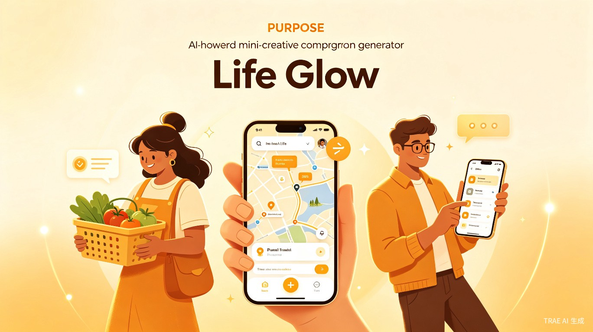
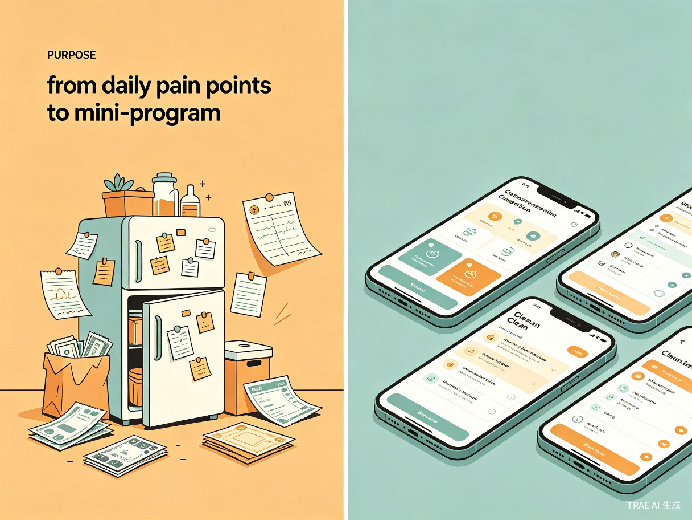

创意名称："生活微光"痛点转化器
想解决什么问题：解决普通人在日常生活中遇到繁琐小事或不便时，因缺乏编程技术而无法快速制作专属工具（如小程序）的痛点。
为什么会想到做这个：灵感来源于日常中许多"小麻烦"——冰箱剩菜不知怎么做、旅行攻略太繁杂、记账太繁琐……普通人往往只能忍受。我们希望能借助 AI，让每个人都能成为自己生活的产品经理。
大概是什么产品：一款基于自然语言交互的微信小程序生成平台（Web/App）。用户只需像聊天一样描述自己的需求，系统即可自动生成并部署一个专属的小程序。

缺乏编程基础，但热爱生活、有丰富生活经验和具体生活痛点的普通大众：
需要管理家庭开支、记录孩子疫苗、规划每日菜谱，却找不到合适的轻量工具。
想要一个专属的学习打卡、社团活动报名或二手交易小工具，但不懂开发。
希望快速整理会议纪要、管理项目待办、记录健身计划，现有 App 却过于臃肿。
需要记录宠物喂食、疫苗、驱虫提醒，市面上的通用 App 无法满足个性化需求。
当用户在生活中发现某个高频痛点（如记账繁琐、旅行攻略太杂、宠物喂食提醒），想要一个轻量级、量身定制的工具来解决时，打开"生活微光"，用自然语言描述需求，几分钟内即可获得专属小程序。
传统小程序开发需要掌握编程语言、框架、设计规范，普通人望而却步。
市面上的通用工具功能繁杂，广告多、体验差，无法精准解决个人痛点。
一个灵光一闪的需求，从构思到落地往往需要数周甚至数月，热情早已消退。
将原本需要数周的开发周期缩短至几分钟，让"想法"到"可用产品"的距离无限趋近于零。用户不再需要学习编程、寻找开发资源、反复沟通需求——只需开口描述，AI 即刻交付。
赋予普通人用技术改善生活的权利，让 AI 真正下沉到每一个充满烟火气的日常场景中。无论是管理冰箱剩菜、规划旅行路线，还是记录宠物健康——每一个微小需求都值得被认真对待。